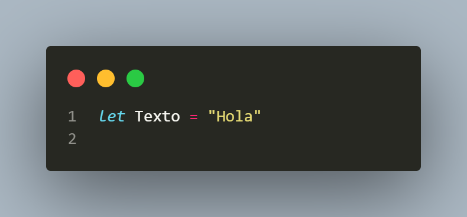
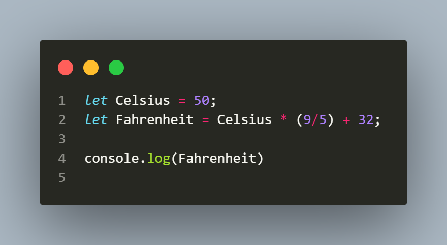
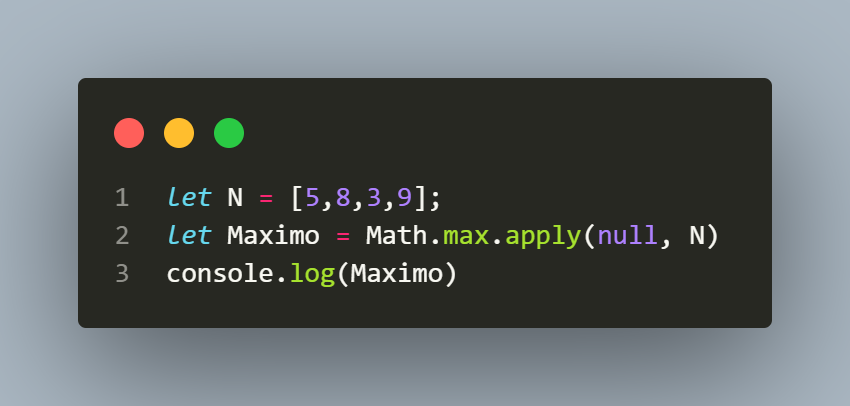
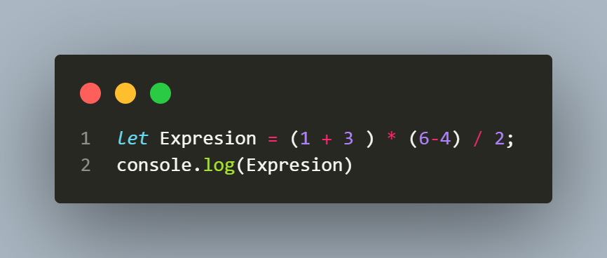
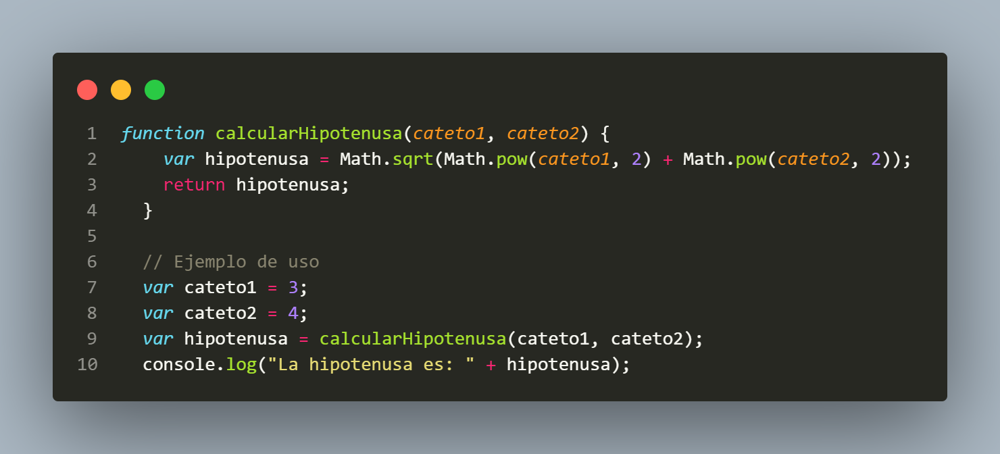
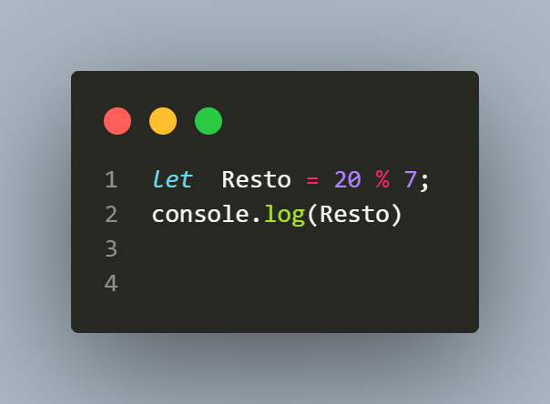

Ejercicios
La práctica constante es una clave fundamental para el éxito en cualquier área de la vida. Ya sea en deportes, música, arte o incluso en el aprendizaje de habilidades como la programación, la dedicación y la repetición son fundamentales para alcanzar la excelencia.
Cuando nos comprometemos a practicar de forma regular, nuestro cerebro se adapta y se fortalece. Cada vez que practicamos, estamos creando y fortaleciendo conexiones neuronales que mejoran nuestro rendimiento y nos permiten realizar tareas de manera más eficiente.
La práctica constante también nos ayuda a desarrollar la disciplina y la perseverancia. A medida que nos enfrentamos a desafíos y superamos obstáculos a través de la práctica, nuestra confianza y autoestima se fortalecen. Además, nos ayuda a aprender de nuestros errores y a mejorar constantemente.
No obstante, la práctica constante puede ser desafiante. A veces, puede parecer monótona o tediosa, y es fácil desmotivarse. En esos momentos, es importante recordar nuestra pasión y mantener la vista en nuestros objetivos. Mantén presente que cada día de práctica te acerca un paso más a alcanzar tus metas y convertirte en la mejor versión de ti mismo/a.
En resumen, la práctica constante es esencial para el crecimiento personal y el logro de la excelencia en cualquier área. Al comprometerte a practicar regularmente y perseverar a pesar de los desafíos, estarás desarrollando habilidades, fortaleza mental y confianza en ti mismo/a. Recuerda que la práctica constante es el camino hacia el éxito. ¡No te rindas y sigue practicando!
Operadores de String
- Concatena dos cadenas usando el operador
+. - Asigna una cadena a una variable llamada
texto.

- Obtén la longitud de la cadena
texto. - Convierte la cadena
textoa minúsculas. - Convierte la cadena
textoa mayúsculas. - Extrae una subcadena de
textodesde el índice 2. - Extrae una subcadena de
textodesde el índice 2 hasta el 5. - Reemplaza una parte de la cadena
textopor otra cadena. - Encuentra la posición de una subcadena dentro de
texto. - Verifica si
textocomienza con la subcadena "Hola". - Verifica si
textotermina con la subcadena "Mundo". - Divide
textoen un arreglo de subcadenas usando un separador. - Elimina los espacios en blanco al inicio y al final de
texto. - Obtén el carácter en el índice 3 de
texto. - Convierte un número a cadena usando el método
toString(). - Verifica si una cadena contiene otra subcadena usando el método
includes(). - Repite la cadena
textotres veces usando el métodorepeat(). - Obtén el índice de la primera aparición de una subcadena en
texto. - Convierte una cadena en un arreglo de caracteres usando el método
split(). - Une los elementos de un arreglo en una cadena usando el método
join(). - Obtén una subcadena de
textodesde el índice -3. - Reemplaza todas las apariciones de una subcadena en
textopor otra cadena. - Verifica si
textoes igual a otra cadena usando el operador de igualdad. - Verifica si
textoes diferente a otra cadena usando el operador de desigualdad. - Obtén una subcadena de
textocon un rango de índices invertido.


Arreglos
- Declara un arreglo llamado
numeroscon los valores [1, 2, 3, 4, 5]. - Accede al segundo elemento del arreglo
numeros. - Modifica el tercer elemento del arreglo
numerosy asígnale el valor 10. - Agrega un nuevo elemento con el valor 6 al final del arreglo
numeros. - Elimina el último elemento del arreglo
numeros. - Declara un arreglo vacío llamado
frutas. - Agrega los elementos 'manzana', 'banana' y 'naranja' al arreglo
frutas. - Obtén la longitud del arreglo
frutas. - Concatena los arreglos
numerosyfrutas. - Ordena el arreglo
numerosde forma ascendente. - Invierte el orden de los elementos del arreglo
frutas. - Verifica si el elemento 'banana' existe en el arreglo
frutas. - Encuentra la posición del elemento 'naranja' en el arreglo
frutas. - Obtén los primeros 3 elementos del arreglo
numeros. - Obtén los últimos 2 elementos del arreglo
frutas. - Remueve el segundo elemento del arreglo
numeros. - Reemplaza el primer elemento del arreglo
frutascon el valor 'pera'. - Une los elementos del arreglo
frutasen un string separado por comas. - Verifica si todos los elementos del arreglo
numerosson mayores a 0. - Verifica si al menos un elemento del arreglo
frutascomienza con la letra 'm'. - Multiplica cada elemento del arreglo
numerospor 2. - Obtén el valor máximo del arreglo
numeros. - Obtén el valor mínimo del arreglo
numeros. - Crea una copia del arreglo
frutas. - Vacía el arreglo
numeros. - Verifica si el arreglo
frutases vacío.
Template String
- Concatena dos variables
nombreyapellidoutilizando template strings. - Utiliza un template string para mostrar un mensaje con el resultado de una operación matemática.
- Combina un string estático con el valor de una variable utilizando template strings.
- Crea una plantilla de URL utilizando variables y template strings.
- Genera un mensaje personalizado utilizando template strings y variables.
- Concatena múltiples variables utilizando template strings.
- Crea un mensaje de bienvenida utilizando template strings y el valor de una variable.
- Combina texto y el resultado de una expresión matemática utilizando template strings.
- Utiliza template strings para mostrar el contenido de un objeto con sus propiedades.
- Crea un mensaje utilizando template strings y una variable booleana.
- Concatena un string con el valor numérico de una variable utilizando template strings.
- Crea una lista desordenada de elementos utilizando template strings y un array de datos.
- Genera una tabla HTML utilizando template strings y un array de objetos.
- Utiliza template strings para mostrar un mensaje de error con detalles adicionales.
- Crea una lista ordenada numerada utilizando template strings y un array de datos.
- Concatena varios strings utilizando template strings y operadores de concatenación.
- Combina texto estático y el resultado de una función utilizando template strings.
- Utiliza template strings para mostrar información de un usuario con sus propiedades.
- Crea una tabla HTML con filas dinámicas utilizando template strings y un array de datos.
- Genera un mensaje utilizando template strings y operadores ternarios.
- Crea un enlace HTML con texto y URL dinámicos utilizando template strings y variables.
- Concatena el resultado de una función con un string utilizando template strings.
- Utiliza template strings para mostrar una lista de elementos con su posición y valor.
- Crea un mensaje utilizando template strings y un array de palabras.
- Combina texto y el resultado de una expresión booleana utilizando template strings.
Obejtos
- Crear un objeto llamado
personacon propiedadesnombreyedad. - Acceder al valor de la propiedad
nombredel objetopersona. - Modificar el valor de la propiedad
edaddel objetopersona. - Agregar una nueva propiedad llamada
ciudadal objetopersona. - Eliminar la propiedad
edaddel objetopersona. - Crear un objeto llamado
librocon propiedadestitulo,autoryaño. - Acceder al valor de la propiedad
autordel objetolibro. - Modificar el valor de la propiedad
añodel objetolibro. - Agregar una nueva propiedad llamada
editorialal objetolibro. - Eliminar la propiedad
titulodel objetolibro. - Crear un objeto llamado
productocon propiedadesnombre,precioycantidad. - Acceder al valor de la propiedad
preciodel objetoproducto. - Modificar el valor de la propiedad
cantidaddel objetoproducto. - Agregar una nueva propiedad llamada
descripcional objetoproducto. - Eliminar la propiedad
nombredel objetoproducto. - Crear un objeto llamado
cochecon propiedadesmarca,modeloyaño. - Acceder al valor de la propiedad
marcadel objetocoche. - Modificar el valor de la propiedad
modelodel objetocoche. - Agregar una nueva propiedad llamada
coloral objetocoche. - Eliminar la propiedad
añodel objetocoche. - Crear un objeto llamado
frutacon propiedadesnombreyprecio. - Acceder al valor de la propiedad
nombredel objetofruta. - Modificar el valor de la propiedad
preciodel objetofruta. - Agregar una nueva propiedad llamada
coloral objetofruta. - Eliminar la propiedad
nombredel objetofruta. - Crear un objeto llamado
usuariocon propiedadesnombre,emailycontraseña. - Acceder al valor de la propiedad
emaildel objetousuario. - Modificar el valor de la propiedad
contraseñadel objetousuario. - Agregar una nueva propiedad llamada
telefonoal objetousuario. - Eliminar la propiedad
nombredel objetousuario.
Funciones
- Suma dos números:
sum(a, b) - Resta dos números:
subtract(a, b) - Multiplica dos números:
multiply(a, b) - Divide dos números:
divide(a, b) - Obtiene el residuo de la división de dos números:
modulo(a, b) - Calcula el valor absoluto de un número:
absoluteValue(num) - Calcula la potencia de un número:
power(base, exponent) - Calcula la raíz cuadrada de un número:
squareRoot(num) - Calcula el seno de un ángulo en radianes:
sin(angle) - Calcula el coseno de un ángulo en radianes:
cos(angle) - Calcula la tangente de un ángulo en radianes:
tan(angle) - Calcula el valor máximo entre dos números:
max(a, b) - Calcula el valor mínimo entre dos números:
min(a, b) - Redondea un número hacia abajo al entero más cercano:
floor(num) - Redondea un número hacia arriba al entero más cercano:
ceil(num) - Redondea un número al entero más cercano:
round(num) - Calcula el valor absoluto más grande entre dos números:
maxAbsolute(a, b) - Calcula el valor mínimo absoluto entre dos números:
minAbsolute(a, b) - Genera un número aleatorio entre 0 y 1:
random() - Genera un número aleatorio entre dos valores dados:
randomInRange(min, max) - Convierte un ángulo de grados a radianes:
degreesToRadians(degrees) - Convierte un ángulo de radianes a grados:
radiansToDegrees(radians) - Calcula el logaritmo natural de un número:
naturalLog(num) - Calcula el logaritmo en base 10 de un número:
log10(num) - Calcula el logaritmo en base 2 de un número:
log2(num)
Operadores aritmeticos
- Suma: Calcula la suma de 5 y 7.
- Resta: Resta 9 a 15.
- Multiplicación: Multiplica 4 por 6.
- División: Divide 20 entre 5.
- Módulo: Calcula el residuo de la división de 17 entre 3.
- Potenciación: Eleva 3 al cuadrado.
- Incremento: Incrementa en 1 el valor de una variable.
- Decremento: Decrementa en 2 el valor de una variable.
- Operaciones combinadas: Realiza la operación (4 + 2) * 3 - 5.
- Prioridad de operaciones: Calcula el resultado de 10 - 4 * 2.
- Calcula el área de un rectángulo de base 8 y altura 5.
- Calcula el perímetro de un cuadrado con lado de longitud 6.
- Calcula el área de un círculo de radio 3.
- Convierte 50 grados Celsius a Fahrenheit usando la fórmula: F = C * 9/5 + 32. 
- Calcula el promedio de 4 números: 8, 5, 12 y 10.
- Calcula el valor absoluto de -9.
- Comprueba si el número 7 es par o impar.
- Calcula el máximo entre 10 y 17.
- Calcula el mínimo entre 5, 8, 3 y 9. 
- Calcula el resultado de la expresión (2 + 3) * (6 - 4) / 2. 
- Calcula la hipotenusa de un triángulo rectángulo con catetos de longitud 3 y 4. 
- Calcula el valor de x en la ecuación 2x + 5 = 13.
- Comprueba si el número 25 es divisible entre 5.
- Calcula el resultado de la expresión (7 + 3) / (2 * 2) + 1.
- Calcula el resto de la división de 20 entre 7. 


Operadores de Asignacion
- Asigna el valor 5 a una variable llamada
x. - Incrementa en 2 el valor de
x. - Multiplica
xpor 3. - Divide
xpor 4. - Resta 1 a
x. - Asigna el valor de
xa una variable llamaday. - Incrementa
yen 10. - Multiplica
ypor 2. - Divide
ypor 5. - Resta 3 a
y. - Asigna el valor 7 a una variable llamada
z. - Suma
xyz, y asigna el resultado ax. - Resta
yyz, y asigna el resultado ay. - Multiplica
xporyy asigna el resultado ax. - Incrementa
zen 1. - Divide
xentrezy asigna el resultado ax. - Resta
ydexy asigna el resultado ay. - Multiplica
xpor 5 y asigna el resultado ax. - Divide
ypor 2 y asigna el resultado ay. - Incrementa
xen 1 usando el operador de incremento. - Resta 1 a
yusando el operador de decremento. - Asigna el valor 2 a
xusando el operador de asignación. - Multiplica
ypor 3 usando el operador de asignación. - Divide
xpor 2 usando el operador de asignación. - Calcula el módulo de
yentre 4 usando el operador de asignación.
Operaciones de comparacion
- Compara si 5 es igual a 5.
- Compara si 10 es mayor que 7.
- Compara si 3 es menor que 5.
- Compara si "hola" es igual a "Hola".
- Compara si true es igual a false.
- Compara si 10 es mayor o igual que 8.
- Compara si 4 es menor o igual que 2.
- Compara si "perro" es distinto de "gato".
- Compara si true es estrictamente igual a true.
- Compara si 7 es estrictamente menor que "7".
- Compara si false es estrictamente distinto de 0.
- Compara si "hola" es estrictamente igual a "hola".
- Compara si 12 es estrictamente mayor que 12.
- Compara si 6 es estrictamente menor o igual que 6.
- Compara si "verde" es estrictamente distinto de "azul".
- Compara si true es igual a 1.
- Compara si 9 es mayor que "8".
- Compara si null es igual a undefined.
- Compara si "hola" es menor o igual que "adios".
- Compara si NaN es distinto de NaN.
- Compara si true es estrictamente igual a 1.
- Compara si 15 es estrictamente menor que 10.
- Compara si "manzana" es estrictamente distinto de "manzana".
- Compara si false es estrictamente mayor o igual que 0.
- Compara si undefined es estrictamente igual a null.
- Compara si "azul" es estrictamente menor o igual que "azul".
Operaciones Logicas
- Verifica si 5 es mayor que 3.
- Verifica si 10 es igual a 10.
- Verifica si 7 es menor o igual que 9.
- Verifica si 4 es distinto de 6.
- Verifica si 8 es mayor que 5 y menor que 10.
- Verifica si 6 es par.
- Verifica si "hola" es igual a "hola" y distinto de "adiós".
- Verifica si 20 es divisible por 5 o 3.
- Verifica si al menos uno de los siguientes es verdadero: true, false, true.
- Verifica si todos los siguientes son verdaderos: true, true, true.
- Verifica si al menos uno de los siguientes es falso: false, true, true.
- Verifica si todos los siguientes son falsos: false, false, false.
- Verifica si al menos uno de los siguientes es verdadero: 0, false, null.
- Verifica si todos los siguientes son verdaderos: "hola", true, 1.
- Verifica si al menos uno de los siguientes es falso: "", 0, undefined.
- Verifica si todos los siguientes son falsos: NaN, false, null.
- Verifica si al menos uno de los siguientes es verdadero: !true, !!false, !!!true.
- Verifica si todos los siguientes son verdaderos: !false, !!true, !!!false.
- Verifica si al menos uno de los siguientes es falso: !true, !!false, !!!false.
- Verifica si todos los siguientes son falsos: !true, !!false, !!!true.
- Verifica si al menos uno de los siguientes es verdadero: Boolean(0), Boolean(""), Boolean(null).
- Verifica si todos los siguientes son verdaderos: Boolean(1), Boolean("hola"), Boolean([]).
- Verifica si al menos uno de los siguientes es falso: Boolean(undefined), Boolean(NaN), Boolean("").
- Verifica si todos los siguientes son falsos: Boolean(false), Boolean(null), Boolean(0).
- Verifica si al menos uno de los siguientes es verdadero: Boolean(undefined) || Boolean(null).
- Verifica si todos los siguientes son verdaderos: Boolean(true) && Boolean(1).
Operadores Ternarios
- Comprueba si una variable
xes mayor que 10. Si es cierto, asigna 1 a otra variable llamadaresultado; de lo contrario, asigna 0. - Comprueba si una variable
edades mayor o igual a 18. Si es cierto, asigna "Mayor de edad" a otra variable llamadamensaje; de lo contrario, asigna "Menor de edad". - Comprueba si una variable
esValidoes verdadera. Si es cierto, asigna "Válido" a otra variable llamadaestado; de lo contrario, asigna "Inválido". - Comprueba si una variable
numeroes par. Si es cierto, asigna "Par" a otra variable llamadatipo; de lo contrario, asigna "Impar". - Comprueba si una variable
puntuaciones mayor o igual a 60. Si es cierto, asigna "Aprobado" a otra variable llamadaresultado; de lo contrario, asigna "Reprobado". - Comprueba si una variable
temperaturaes mayor a 25. Si es cierto, asigna "Calor" a otra variable llamadaclima; de lo contrario, asigna "Frio". - Comprueba si una variable
esBisiestoes verdadera. Si es cierto, asigna 366 a otra variable llamadadias; de lo contrario, asigna 365. - Comprueba si una variable
notaes mayor o igual a 90. Si es cierto, asigna "A" a otra variable llamadacalificacion; de lo contrario, asigna "B". - Comprueba si una variable
horaes menor a 12. Si es cierto, asigna "AM" a otra variable llamadaperiodo; de lo contrario, asigna "PM". - Comprueba si una variable
esPositivoes verdadera. Si es cierto, asigna el valor absoluto de otra variable llamadanumero; de lo contrario, asigna el valor negativo denumero. - Comprueba si una variable
diaes igual a "Lunes". Si es cierto, asigna 1 a otra variable llamadanumeroDia; de lo contrario, asigna 0. - Comprueba si una variable
esPrimoes verdadera. Si es cierto, asigna "Primo" a otra variable llamadatipo; de lo contrario, asigna "No Primo". - Comprueba si una variable
edades mayor o igual a 18. Si es cierto, asigna "Mayor de edad" a otra variable llamadastatus; de lo contrario, asigna "Menor de edad". - Comprueba si una variable
puntuaciones mayor o igual a 60. Si es cierto, asigna "Aprobado" a otra variable llamadaestado; de lo contrario, asigna "Reprobado". - Comprueba si una variable
esPares verdadera. Si es cierto, asigna "Par" a otra variable llamadatipoNumero; de lo contrario, asigna "Impar". - Comprueba si una variable
numeroes positivo. Si es cierto, asigna "Positivo" a otra variable llamadasigno; de lo contrario, asigna "Negativo". - Comprueba si una variable
meses igual a "Enero" o "Febrero". Si es cierto, asigna "Invierno" a otra variable llamadaestacion; de lo contrario, asigna "Otra estación". - Comprueba si una variable
esDiaHabiles verdadera. Si es cierto, asigna "Trabajo" a otra variable llamadaactividad; de lo contrario, asigna "Descanso". - Comprueba si una variable
esPositivoes verdadera. Si es cierto, asigna el valor de otra variable llamadanumero; de lo contrario, asigna el valor negativo denumero. - Comprueba si una variable
aes mayor que una variableb. Si es cierto, asigna el valor deaa otra variable llamadamayor; de lo contrario, asigna el valor deb. - Comprueba si una variable
esMayorDeEdades verdadera. Si es cierto, asigna "Mayor de edad" a otra variable llamadamensaje; de lo contrario, asigna "Menor de edad". - Comprueba si una variable
puntuaciones mayor o igual a 70. Si es cierto, asigna "Aprobado" a otra variable llamadaresultado; de lo contrario, asigna "Reprobado". - Comprueba si una variable
esPares verdadera. Si es cierto, asigna "Par" a otra variable llamadatipoNumero; de lo contrario,
Operadores de Tipo
- Verifica si una variable es de tipo número.
- Verifica si una variable es de tipo cadena de texto.
- Verifica si una variable es de tipo booleano.
- Verifica si una variable es de tipo objeto.
- Verifica si una variable es de tipo función.
- Verifica si una variable es de tipo arreglo.
- Verifica si una variable es de tipo indefinido.
- Verifica si una variable es de tipo nulo.
- Verifica si una variable es de tipo símbolo.
- Verifica si una variable es de tipo fecha.
- Verifica si una variable es de tipo regular expression (expresión regular).
- Verifica si una variable es de tipo NaN (Not-a-Number).
- Verifica si una variable es de tipo infinito.
- Verifica si una variable es de tipo booleano primitivo (true o false).
- Verifica si una variable es de tipo objeto primitivo.
- Verifica si una variable es de tipo cadena de texto primitiva.
- Verifica si una variable es de tipo número primitivo.
- Verifica si una variable es de tipo símbolo primitivo.
- Verifica si una variable es de tipo función primitiva.
- Verifica si una variable es de tipo indefinido o nulo.
- Verifica si una variable es de tipo objeto o función.
- Verifica si una variable es de tipo cadena de texto o número.
- Verifica si una variable es de tipo objeto o arreglo.
- Verifica si una variable es de tipo cadena de texto o booleano.
- Verifica si una variable es de tipo número o indefinido.
- Verifica si una variable es de tipo nulo o símbolo.
Condicional if
- Escribe un programa que verifique si un número es positivo, negativo o cero.
- Escribe un programa que determine si un número es par o impar.
- Escribe un programa que determine si un número es divisible por 3.
- Escribe un programa que compare dos números y muestre el mayor de ellos.
- Escribe un programa que verifique si una cadena de texto está vacía.
- Escribe un programa que compare dos cadenas de texto y determine si son iguales.
- Escribe un programa que determine si un año es bisiesto.
- Escribe un programa que verifique si un número está en el rango de 1 a 100.
- Escribe un programa que determine si un número es primo.
- Escribe un programa que calcule el área de un triángulo dados su base y altura.
- Escribe un programa que determine si un número es un múltiplo de 5 y de 7.
- Escribe un programa que verifique si un carácter es una vocal o una consonante.
- Escribe un programa que determine si un número es positivo y menor que 100.
- Escribe un programa que verifique si un año es mayor o igual a 2000.
- Escribe un programa que determine si un número es divisible por 2 y por 3.
- Escribe un programa que determine si una cadena de texto contiene la palabra "JavaScript".
- Escribe un programa que calcule el promedio de tres números.
- Escribe un programa que verifique si una cadena de texto comienza con una letra mayúscula.
- Escribe un programa que determine si un número es mayor que 10 y menor que 20.
- Escribe un programa que determine si un número es par y positivo.
- Escribe un programa que verifique si un número es igual a 0, positivo o negativo.
- Escribe un programa que determine si un número es divisible por 4 pero no por 6.
- Escribe un programa que verifique si una cadena de texto tiene más de 5 caracteres.
- Escribe un programa que determine si un número es mayor que 100 o menor que -100.
- Escribe un programa que verifique si un número es mayor que 0 y menor que 10.
- Escribe un programa que determine si un número es múltiplo de 3 y de 5 a la vez.
Condicional if else
- Escribe un programa que determine si un número es positivo o negativo.
- Escribe un programa que determine si un número es par o impar.
- Escribe un programa que compare dos números y muestre el mayor de ellos.
- Escribe un programa que verifique si una palabra es palíndromo (se lee igual de derecha a izquierda y viceversa).
- Escribe un programa que determine si una persona puede votar según su edad.
- Escribe un programa que verifique si un año es bisiesto.
- Escribe un programa que calcule el área de un triángulo.
- Escribe un programa que determine si un número es primo.
- Escribe un programa que convierta una nota numérica en una calificación (A, B, C, D, F).
- Escribe un programa que determine si un número es múltiplo de 3 y de 5.
- Escribe un programa que verifique si un número es divisible entre otro número dado.
- Escribe un programa que determine si un año es un siglo (multiplo de 100) y si es bisiesto.
- Escribe un programa que verifique si una cadena de texto contiene una vocal.
- Escribe un programa que determine si un número es perfecto (la suma de sus divisores es igual al número).
- Escribe un programa que determine si un número es un número de Armstrong.
- Escribe un programa que determine si un número es un número primo de Mersenne.
- Escribe un programa que determine si un número es un número triangular.
- Escribe un programa que ordene tres números de menor a mayor.
- Escribe un programa que determine si un número es un cuadrado perfecto.
- Escribe un programa que determine si una cadena de texto es un palíndromo.
- Escribe un programa que calcule el factorial de un número.
- Escribe un programa que determine si una persona es mayor de edad y si tiene permiso de conducir.
- Escribe un programa que convierta una hora en formato de 24 horas a formato de 12 horas.
- Escribe un programa que determine si un número es un número feliz.
- Escribe un programa que determine si un número es un número primo gemelo.
- Escribe un programa que calcule el máximo común divisor (MCD) de dos números.
Ciclo for
- Imprimir los números del 1 al 10 en la consola.
- Imprimir los números pares del 1 al 20 en la consola.
- Imprimir los números impares del 50 al 70 en la consola.
- Calcular la suma de los números del 1 al 100 e imprimir el resultado.
- Imprimir los múltiplos de 5 del 1 al 50 en la consola.
- Imprimir la tabla de multiplicar del 5 (del 1 al 10) en la consola.
- Calcular el factorial de un número dado e imprimir el resultado.
- Imprimir los elementos de un array en la consola.
- Imprimir los números del 10 al 1 en la consola.
- Imprimir los caracteres de una cadena de texto en la consola.
- Imprimir los números primos del 1 al 50 en la consola.
- Calcular la suma de los elementos de un array e imprimir el resultado.
- Imprimir los números del 1 al 100, pero saltando de 10 en 10 en la consola.
- Imprimir los números del 20 al 100, pero solo los múltiplos de 3 en la consola.
- Imprimir los números del 1 al 100 en la consola, pero reemplazar los múltiplos de 3 por "Fizz" y los múltiplos de 5 por "Buzz".
- Imprimir la suma de los números pares del 1 al 50 en la consola.
- Imprimir el promedio de un array de números en la consola.
- Imprimir los elementos de un objeto en la consola.
- Imprimir los números del 1 al 100 en la consola, pero reemplazar los múltiplos de 3 y 5 por "FizzBuzz".
- Imprimir los números del 1 al 100 en la consola, pero omitir los múltiplos de 7.
- Calcular el máximo valor de un array de números e imprimirlo.
- Imprimir los números del 1 al 100 en la consola, pero solo aquellos que sean divisibles entre 3 y 5.
- Imprimir los números del 1 al 100 en la consola, pero solo aquellos que contengan el dígito 3.
- Imprimir los números primos del 1 al 100 en la consola, pero solo aquellos que sean palíndromos.
- Calcular la multiplicación de dos matrices e imprimir el resultado.
Ciclo while
- Escribe un bucle `while` que imprima los números del 1 al 10.
- Imprime los múltiplos de 3 del 0 al 30 usando un bucle `while`.
- Imprime los números pares del 0 al 20 utilizando un bucle `while`.
- Calcula la suma de los números del 1 al 50 utilizando un bucle `while`.
- Imprime los números del 10 al 1 en orden descendente utilizando un bucle `while`.
- Imprime la tabla de multiplicar del 5 utilizando un bucle `while`.
- Calcula el factorial de un número utilizando un bucle `while`.
- Imprime los dígitos de un número en orden inverso utilizando un bucle `while`.
- Lee números del usuario hasta que se ingrese un número negativo utilizando un bucle `while`.
- Imprime los primeros 20 términos de la serie de Fibonacci utilizando un bucle `while`.
- Encuentra el número más grande en una lista de números utilizando un bucle `while`.
- Calcula el promedio de una lista de números utilizando un bucle `while`.
- Imprime la siguiente secuencia: 1, -2, 3, -4, 5, -6, ... utilizando un bucle `while`.
- Imprime los primeros 10 números primos utilizando un bucle `while`.
- Imprime la suma de los dígitos de un número utilizando un bucle `while`.
- Imprime los caracteres de una cadena en orden inverso utilizando un bucle `while`.
- Calcula el número de dígitos de un número utilizando un bucle `while`.
- Imprime los números impares del 1 al 50 utilizando un bucle `while`.
- Calcula el producto de los números del 1 al 10 utilizando un bucle `while`.
- Imprime los números del 1 al 100, pero reemplaza los múltiplos de 3 por "Fizz" y los múltiplos de 5 por "Buzz". Utiliza un bucle `while`.
- Imprime los primeros 10 números triangulares utilizando un bucle `while`.
- Imprime los números del 1 al 100, pero solo los que son divisibles por 7 utilizando un bucle `while`.
- Imprime los números del 1 al 100, pero solo los que contienen el dígito 5 utilizando un bucle `while`.
- Imprime la suma de los números impares del 1 al 100 utilizando un bucle `while`.
- Imprime los números perfectos del 1 al 1000 utilizando un bucle `while`.
do while
- Imprimir los números impares del 1 al 50.
- Pedir al usuario que ingrese un número y mostrar la tabla de multiplicar de ese número.
- Realizar un juego de adivinar un número aleatorio del 1 al 100. Dar pistas de "mayor" o "menor" según corresponda.
- Calcular el factorial de un número ingresado por el usuario.
- Generar y mostrar los números impares del 1 al 20.
- Pedir al usuario que ingrese un número y mostrar su valor absoluto.
- Realizar un juego de adivinar un número del 1 al 10 en un máximo de 5 intentos. Mostrar el número de intentos restantes.
- Imprimir los primeros 15 números primos.
- Pedir al usuario que ingrese su nombre. Continuar pidiendo hasta que ingrese un nombre válido (que no esté vacío).
- Calcular la suma de los dígitos de un número ingresado por el usuario.
- Imprimir los números del 1 al 100 que sean múltiplos de 3 y 5.
- Pedir al usuario que ingrese una palabra y mostrar la palabra al revés.
- Realizar un juego de adivinar un número aleatorio entre un rango dado por el usuario.
- Calcular la suma de los números pares del 1 al 50.
- Imprimir los números del 1 al 100, pero en lugar de los múltiplos de 3, imprimir "Fizz", y en lugar de los múltiplos de 5, imprimir "Buzz". Para los números que son múltiplos de ambos, imprimir "FizzBuzz".
- Pedir al usuario que ingrese una frase y contar cuántas vocales contiene.
- Realizar un juego de adivinar un número del 1 al 100 en un número máximo de intentos dado por el usuario.
- Calcular el promedio de una serie de números ingresados por el usuario. Terminar cuando ingrese la palabra "fin".
- Imprimir los números del 1 al 100, pero en lugar de los números que contienen un 3, imprimir "Fizz".
- Pedir al usuario que ingrese un número y mostrar si es primo o no.
- Realizar un juego de adivinar una palabra secreta en un número máximo de intentos dado por el usuario.
- Calcular la suma de los números impares del 1 al 50.
- Imprimir los primeros 10 números de la serie de Fibonacci.
- Pedir al usuario que ingrese una frase y mostrar la frase en mayúsculas.
- Realizar un juego de adivinar una letra en un número máximo de intentos dado por el usuario.
Ciclo switch
- Escribe un programa que solicite al usuario un número del 1 al 7 y muestre el día de la semana correspondiente.
- Crea un programa que pida al usuario un mes del año (en forma numérica) y muestre la cantidad de días que tiene ese mes.
- Realiza un programa que solicite al usuario un número del 1 al 12 y muestre el nombre del mes correspondiente.
- Implementa un programa que solicite al usuario un número del 1 al 5 y muestre el nombre de un color correspondiente a ese número.
- Escribe un programa que solicite al usuario una letra y muestre si es una vocal o una consonante.
- Realiza un programa que pida al usuario un número del 1 al 4 y muestre una forma geométrica correspondiente a ese número (por ejemplo, 1 para cuadrado, 2 para triángulo, etc.).
- Crea un programa que solicite al usuario un número del 1 al 7 y muestre si corresponde a un día laboral o a un fin de semana.
- Implementa un programa que solicite al usuario una tecla del teclado (en forma de carácter) y muestre un mensaje indicando si es una tecla de función, una letra, un número o un carácter especial.
- Escribe un programa que pida al usuario un número del 1 al 12 y muestre la estación del año correspondiente.
- Realiza un programa que solicite al usuario un número del 1 al 7 y muestre un mensaje con el nombre del día de la semana y si es laboral o no.
- Crea un programa que pida al usuario una edad y muestre un mensaje indicando si es un bebé, un niño, un adolescente, un adulto joven, un adulto o un adulto mayor.
- Implementa un programa que solicite al usuario una temperatura en grados Celsius y muestre un mensaje indicando si hace frío, calor o temperatura moderada.
- Escribe un programa que solicite al usuario una opción del 1 al 4 y realice una operación matemática correspondiente a esa opción (por ejemplo, suma, resta, multiplicación, división).
- Realiza un programa que pida al usuario un número del 1 al 7 y muestre un mensaje con el nombre del día de la semana y si es laboral, fin de semana o festivo.
- Crea un programa que solicite al usuario una moneda (por ejemplo, USD, EUR, GBP) y muestre el símbolo de la moneda correspondiente.
- Implementa un programa que solicite al usuario una nota del 1 al 5 y muestre un mensaje indicando si ha aprobado o no.
- Escribe un programa que solicite al usuario un número del 1 al 7 y muestre un mensaje con el nombre del día de la semana y si es laboral o fin de semana, teniendo en cuenta que el usuario puede elegir el primer día de la semana.
- Realiza un programa que pida al usuario un número del 1 al 12 y muestre el nombre del mes correspondiente en inglés.
- Crea un programa que solicite al usuario una tecla del teclado (en forma de carácter) y muestre un mensaje indicando si es una vocal minúscula, una vocal mayúscula, una consonante minúscula, una consonante mayúscula o un carácter especial.
- Implementa un programa que solicite al usuario una opción del 1 al 3 y muestre un mensaje con el nombre de un país correspondiente a esa opción.
- Escribe un programa que solicite al usuario un número del 1 al 12 y muestre el nombre del mes correspondiente en español, inglés y francés.
- Realiza un programa que solicite al usuario un número del 1 al 7 y muestre un mensaje con el nombre del día de la semana y si es laboral, fin de semana o festivo, teniendo en cuenta que el usuario puede elegir diferentes días festivos.
- Crea un programa que solicite al usuario una tecla del teclado (en forma de carácter) y muestre un mensaje indicando si es una vocal, una consonante o un carácter especial.
- Implementa un programa que solicite al usuario una opción del 1 al 3 y muestre un mensaje con el nombre de una fruta correspondiente a esa opción.
- Escribe un programa que solicite al usuario un número del 1 al 12 y muestre el nombre del mes correspondiente en diferentes idiomas.
- Realiza un programa que solicite al usuario un número del 1 al 7 y muestre un mensaje con el nombre del día de la semana y si es laboral, fin de semana o festivo, teniendo en cuenta diferentes días festivos y días de trabajo flexibles.